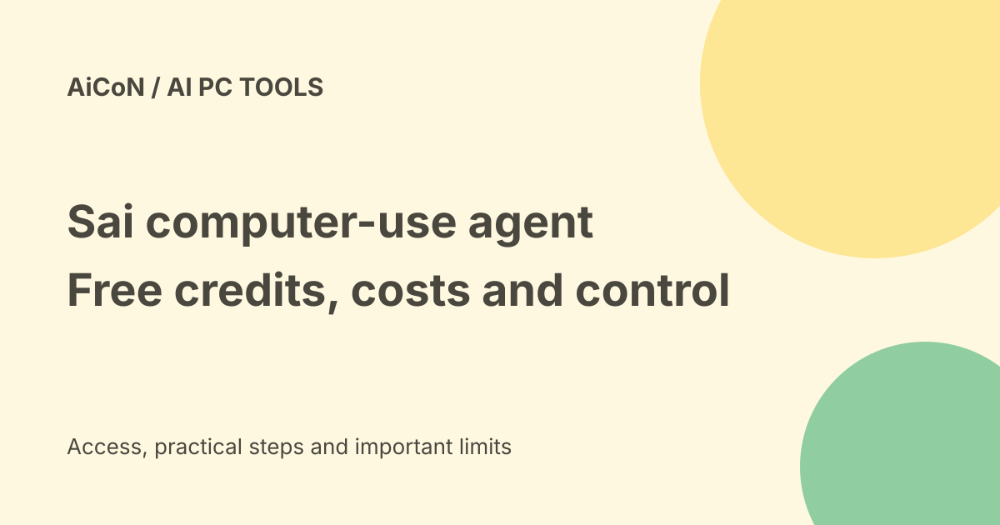

Sai desktop agent: free credits, paid plans and approval checks
Sai is Simular's computer-using agent. It can work through visible apps and websites in a cloud computer or on supported personal devices. Current public pricing includes a free Explore tier, a 50-dollar monthly usage plan and a 500-dollar Unlimited plan with fair-use conditions. These replace the older early-access pricing summary.

What does Sai do?
Sai is designed for computer work rather than chat alone. It can click, type and move between desktop apps, browsers, files and terminals to complete a described task.
Simular gives examples such as research, spreadsheet updates, document handling and recurring reports. These are supported-use descriptions, not proof that every account, website or task will work without errors.
Cloud computer or your own device
The pricing page lists Windows or Linux cloud computers on paid plans. It also describes bringing your own Mac or Windows device, where AI usage counts but cloud-computer time does not.
BYOD means Bring Your Own Device. A personal device can contain private files and signed-in accounts, so review the access boundary before starting. Do not assume your device's contents stay outside the service's processing merely because the device is yours.
Current free tier
Explore is listed at zero dollars with credits refreshed daily, limited access to a cloud Windows computer, workflow creation and testing, and community support.
The checked pricing page does not specify an exact daily credit quantity. Free access is limited, not an unlimited always-on computer. Check the account's current allowance before planning a long run.
The 50-dollar usage plan
Pay as you go is listed at 50 US dollars a month with fifty thousand credits, described as fifty dollars of usage for AI models and computer time.
The page says the dedicated cloud computer is billed only while it runs and allows up to five cloud computers at once. Top-ups are available. Running several machines can consume the allowance faster, so inspect usage rather than treating the plan as unlimited.
The 500-dollar plan
Sai Unlimited is listed at 500 US dollars a month for one workspace, with an always-on Windows or Linux cloud computer. Own-device use is also described.
Unlimited AI usage is subject to fair-use guidelines. The page says heavy usage may shift the workspace into an efficiency-optimised mode. Additional workspaces can need separate upgrades. The name is not a promise of unrestricted compute at every quality setting.
India price and availability checks
Public rates are in US dollars. They do not establish your final Indian payment total, tax, currency conversion charge or entitlement in a particular account.
Confirm supported access, renewal, top-up controls and cancellation in the actual checkout. Enterprise terms are custom. This guide did not purchase a plan or connect a private account.
Approval controls
Simular describes live visibility and approval-based control for important actions. That is a product claim and a useful feature to test, not a reason to give the agent unrestricted access immediately.
Start with read-only research or a disposable file. Before enabling email, purchasing, deletion or record changes, test whether the actual recipient, content and final action are shown for approval.
Teaching repeated work
The launch article says Sai can learn a procedure and replay code for recurring work, returning to model reasoning when the environment changes. The vendor reports substantial token savings.
Those savings are vendor results, not a guaranteed reduction in your bill. An interface change can break a repeated workflow. Check failures, approvals and output quality before leaving it unattended.
Privacy is broader than a secure-workspace label
The October2026 privacy policy describes processing prompts, files, connected-service information, screen and interface observations, and task-related browsing. It says relevant context may be sent to AI model or service providers.
The policy says customer inputs and outputs are not used to train public generalised or foundation models by default without express consent. That commitment does not mean no data is processed or retained. Read the full policy and any enterprise contract for your use case.
A careful first workflow
- Open Sai's official product and pricing pages.
- Check your free allowance or selected paid plan.
- Choose cloud or own-device access deliberately.
- Use a non-sensitive, reversible task.
- Watch the first run and inspect its output.
- Test approval behaviour before allowing external messages or changes.
- Set usage limits and inspect repeated-run costs.
- Only then consider a recurring workflow.
A task such as building a report from public sources is a safer first test than granting access to a customer's inbox or payment account.
What changed since the original post?
The current official pricing page adds a free Explore tier and lists50-dollar and500-dollar plans. The older50-dollar early-access comparison to200dollars and a200-dollar always-on tier are not the current displayed plan structure.
We also distinguish supported own-device use from cloud use and add fair-use, workspace and privacy limits.
Frequently asked questions
Is it free?
A limited Explore tier is listed. Long or paid workloads can consume credits.
Can it run with my laptop closed?
The company describes cloud computers that can keep working. That does not mean every own-device task runs while the device is offline.
Are approvals a guarantee against mistakes?
No. Test the actual controls and review high-risk actions.
Sources: Official product and supported use cases · Current pricing and limits · Official launch and vendor efficiency claims · Current privacy policy. Checked 7 October 2026.